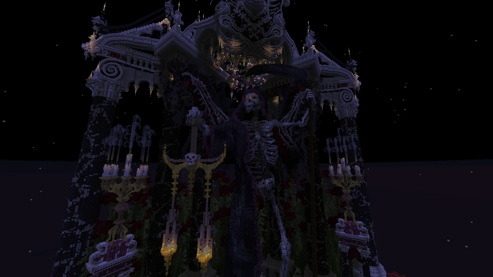
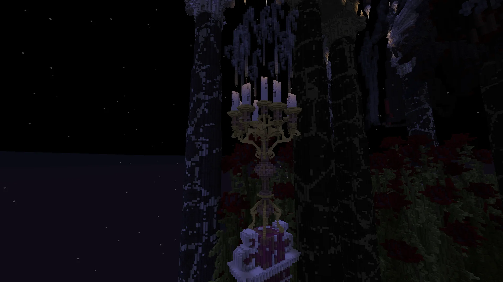
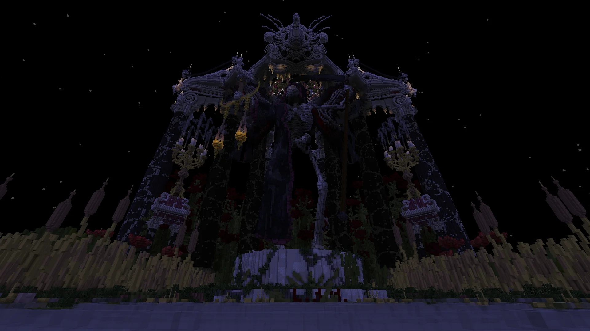
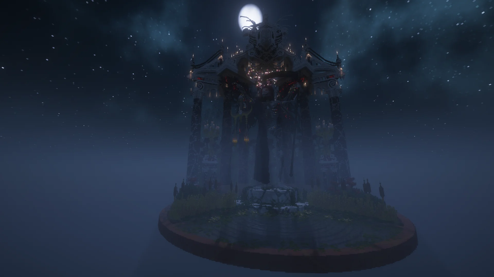

Gallery





- Year
- 2024
- Style
- Dark Fantasy / Baroque
- Type
- Personal project
- Role
- Architecture, organics, landscaping
- Tools
- WorldEdit, VoxelSniper
- Platform
- BuildersRefuge
- Inspiration
- Monument to Cardinal Cinzio Aldobrandini, San Pietro in Vincoli
Project Overview
Adventus Mortis is a dark-fantasy Minecraft build centered on a tribute to the Angel of Death. The build layers baroque altar architecture with large-scale organic skeletal sculpture and dense foliage, using stark value contrast - reminiscent of chiaroscuro - to structure the composition. It's a personal project that treats a single altar as an environment in its own right, complete with landscaping, ritual detail, and cinematic atmosphere.
The piece was directly inspired by the Monument to Cardinal Cinzio Aldobrandini in San Pietro in Vincoli - that same tension between formal religious architecture and the raw sculptural rendering of death and decay. Translated into Minecraft, the goal was to see how far voxel geometry could carry that same weight when combined with organic sculpting and heavy landscaping.
Baroque Architecture Meets Organic Form
The architecture leans into baroque massing and altar language: heavy vertical elements, tiered detailing, and framed focal points. Those forms are then invaded and overtaken by organic Minecraft sculpture - ribs, skeletal curves, and voxel-sculpted plantlife - creating an image of formal architecture being reclaimed by nature and death. Nothing about the skeletal work is prefab; every rib, every bone shard, every jagged curve was hand-sculpted with VoxelSniper and WorldEdit against the fixed geometry of the altar.
Palette choice reinforces the contrast: the altar uses cool, restrained stones that read as architectural and heavy, while the organic elements shift into warmer, more decayed tones. The transition between them is deliberately messy - you're meant to feel that the natural forms grew through the architecture, not next to it.
Landscaping and Atmosphere
Dense foliage, moss, and vine work push in against the architecture from all sides. Lighting is used sparingly and directionally so that the scene reads with clear focal hierarchy, and negative space is treated as an active part of the composition rather than empty background. Candle placement and ritual detailing on the altar surface break the scale of the larger structure, giving the eye anchor points at multiple distances.
Shader-rendered views push the atmosphere further with volumetric light and shadow, but the underlying vanilla scene is already designed to read strongly - nothing about the composition depends on post-processing to work.
Tools and Process
Built on BuildersRefuge with WorldEdit and VoxelSniper. WorldEdit handled the primary altar architecture and rough palette work; VoxelSniper handled all of the organic sculpting - ribs, foliage, ground erosion, and the transitions between architecture and natural growth. The project was built iteratively, refined over multiple passes, with lighting and atmosphere layered on last so the composition could be evaluated in daylight before finalising.
Where This Fits in the Portfolio
Adventus Mortis is one of my strongest demonstrations of dark-fantasy Minecraft work and voxel organic sculpting. If you want to see another character-focused organic project, view Helen of Troy; for a more architectural counterpart, see Skull Castle.
Related Projects


Organic or dark-fantasy build?
If you're planning a project that blends architecture with large-scale organic sculpture, I'd be glad to talk.
Discuss a Project